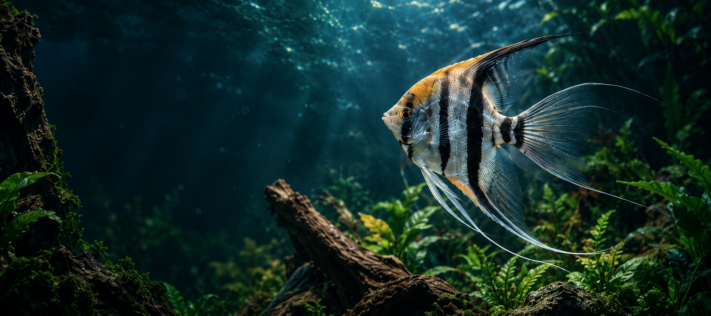

A steady subject
The fish, fins, plants and wood stay exactly as they are in the original image.
Aquatic World / controlled animation
A quiet scene, with a trace of light and life in the water.
Compare current websites
What to look for
This independent study prepares the same motion direction for both website implementations.
The fish, fins, plants and wood stay exactly as they are in the original image.
Soft water light and ten tiny particles move in the quiet left side of the scene.
Pause whenever you like. Reduced motion starts with a still image; leaving the scene suspends animation.